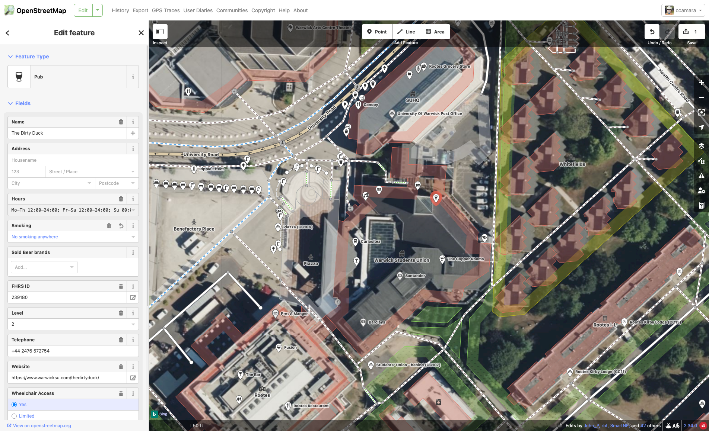
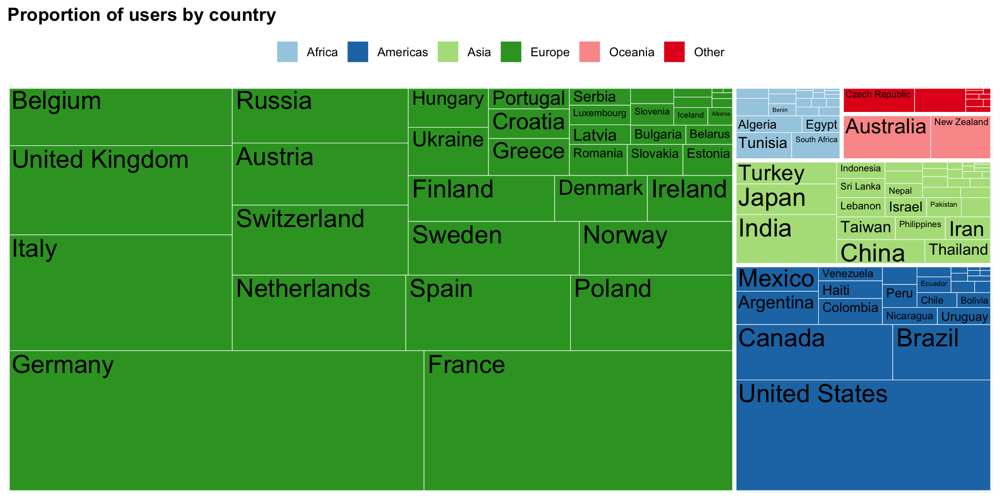

| category | x | y |
|---|---|---|
| 7 | 24.99748 | 75.441562 |
| 9 | 56.92584 | 79.206319 |
| 8 | 55.90592 | 54.252673 |
| 10 | 36.89433 | 47.706556 |
| 8 | 20.20978 | 67.516642 |
| 4 | 69.51934 | 47.384534 |
| 7 | 39.79590 | 28.443219 |
| 1 | 43.54278 | 62.460311 |
| 9 | 70.98194 | 21.145888 |
| 9 | 68.74563 | 75.790055 |
| 7 | 62.51177 | 7.491232 |
| 4 | 50.42091 | 43.347957 |
| 10 | 65.04433 | 11.000841 |
| 9 | 58.98825 | 78.917259 |
| 5 | 51.68030 | 89.997028 |
Data visualizations as methods …for discovering dinosaurs!
Digital Good Network Summer School
24-06-2025, Sheffield
Yes
They all are important stuff:
Tools define what we can and can’t do, and how we do it (consider affordances, workflows, price, features…)
Choosing the right Chart types is not trivial, and play a key role in succeeding or failing at what we want to do with data vis.
Recipes / Tricks are ideal to quickly learn specific, frequent tasks.
…But
They are usually subject to trends or commercial interests (Newer != better)
- New chart types and software are constantly created (also, see Wickham (2010))
Too specific, difficult to generalise from or start from
Data visualisations are way more than a series of technical choices.


Scatterplots are a very popular and effective visualisation (even as basic as this one!) to detect correlations.

Imago Mundi Babylonian map, the oldest known world map, 6th century BC Babylonia. Now in the British Museum.
Communicating information
This usually comes at the end of the process. Here we use data vis to convey clear, memorable messages from complex data.

Source: https://graphics.wsj.com/infectious-diseases-and-vaccines/

This interactive dashboard encourages users to focus on one area – a country, region, or income level – and see how it compares to its counterparts across a wide range of metrics. Author: Lindsey Poulter. Source: https://lindseypoulter.com/wdvp/
OpenStreetMap (OSM)
OSM is the largest and most exhaustive collaborative map of the world.


OSM is also a community of 10,000,000 users worldwide! (mostly volunteers, but not always)
How?
Participatory research: teaming with GeoChicas to codesign data visualisations
GeoChicas is a collective of feminist women linked to OpenStreetMap, originally Spanish-speaking, who work for women’s empowerment and the reduction of the gender gap in OpenStreetMap communities and in communities associated with the world of free software and open data.
Data visualisations as a method to:
- think about data (and representation)
- communicate and surface controversies

Understanding community composition


Results are not representative, but significative: show a clear over-representation of certain demographics.
Inclusive cartographies
Planning a series of workhops aimed at creating maps that address particular needs of underrepresented minorities using data that is available in OpenStreetMap
Prompts:
Aim: what would you want the map to help you with?
Iconography: how are the icons being used?
Information being displayed or not: what do you want to be seen? How would you like it to be represented?
Audience:
People from non-hegemonic demographics (women, racialized, LGTBQ+) who feel that current maps do not sufficiently address their needs.
Map enthusiasts, Data visualization enthusiasts and OpenStreetMap users with a keen interest in EDI issues.
Activists, Researchers, or people sensitive to EDI issues and inequalities (we will particularly welcome people interested in issues related to gender, race or queer topics).
You are invited!